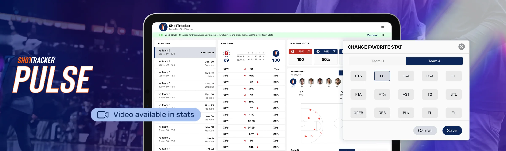
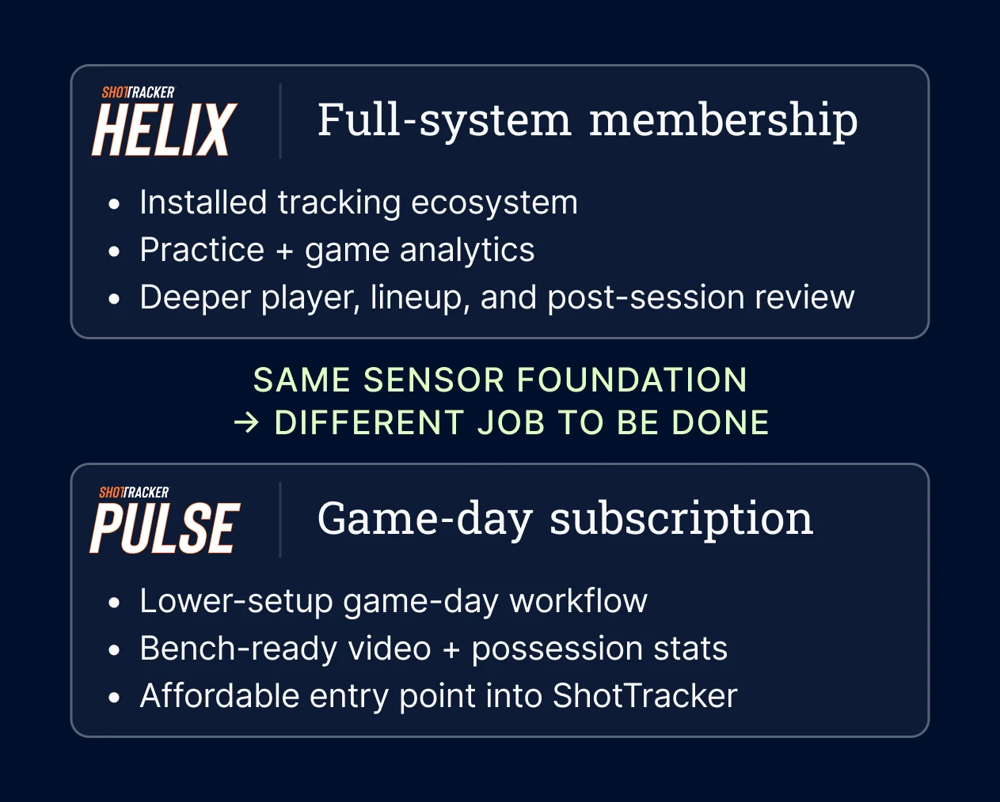
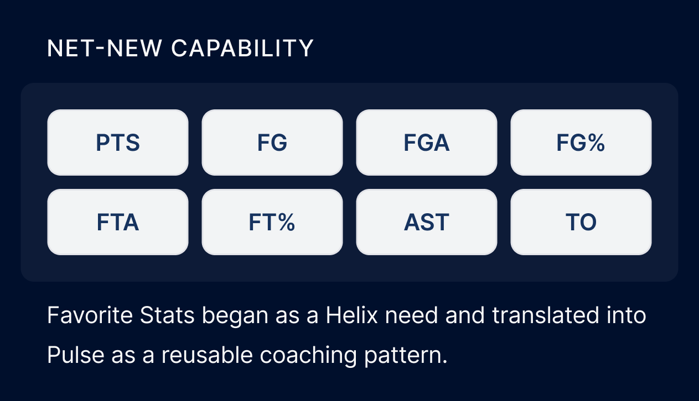
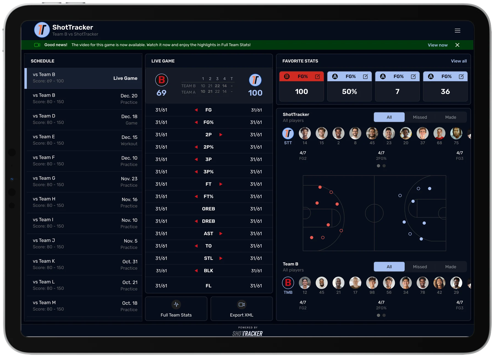
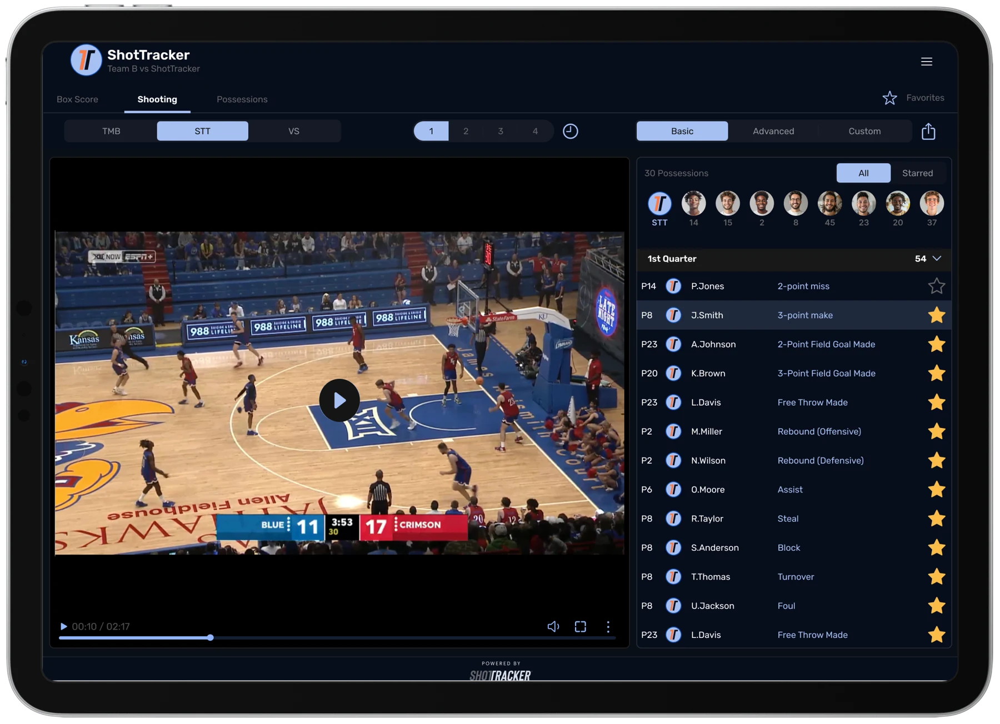
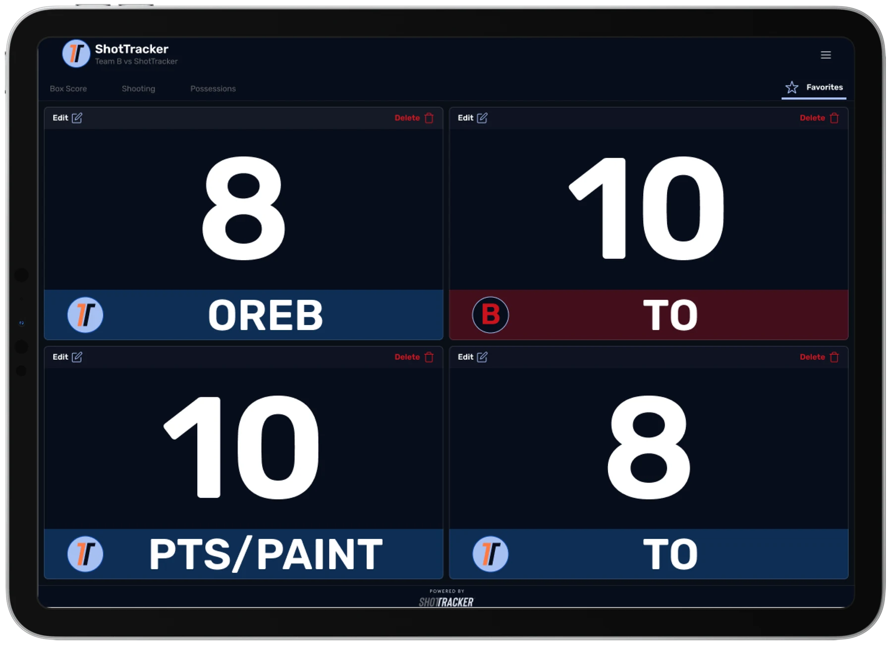
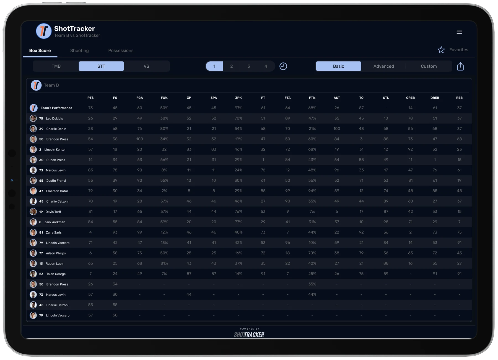

01
Connect the video
Coaches select a broadcast feed or connect ShotTracker’s optional video kit.

ShotTracker Pulse is a portable iPad product that pairs game video with possession-specific stats, helping coaches make faster decisions from the bench. It can be set up the same day without a court installation, making live game insights easier for more programs to adopt.
How Pulse Works
01
Coaches select a broadcast feed or connect ShotTracker’s optional video kit.
02
Pulse connects time-stamped video with game stats and organizes both by possession.
03
Coaches can review automated box scores, pre-cut video, and the stats that matter most while the game is happening.
Design Challenge
01
Teams needed a product they could take on the road and prepare for a game in hours, without installing equipment in the court.
02
Coaches needed to move from a stat to the relevant possession video quickly enough to make an adjustment during the game.
03
Some apps still used DD Sports naming and older store imagery. Customers needed one clear ShotTracker brand across every product they encountered.
Key Product Decisions

Decision 01
Helix is ShotTracker’s court-installed system for automated practice and game tracking. Pulse serves a different moment: portable video and stats from the bench. I focused the Pulse experience on possession context, box scores, and selected stats without pulling attention away from the game.
Decision 02
I redesigned key parts of Helix while designing Pulse, giving me the opportunity to align both experiences at the same time. I also created a shared design library so ShotTracker products could use the same components, visual language, and interaction patterns. Consistent navigation and activity filters helped coaches move between the court-installed Helix system and portable Pulse product without learning a different workflow.

Decision 03
I created Favorite Stats so coaches could choose which numbers stayed large and visible during a game. The product collected those stats automatically, helping coaches focus on strategy instead of manual tracking.

Review possession-specific stats as the game happens.

Open time-stamped game video alongside the stats for each possession.

Choose the stats that matter most and keep them visible during the game.

Use automated box-score data to review team and player performance from the bench.
Product Strategy
Pulse was designed as a focused game-day product rather than a smaller version of another ShotTracker solution. I prioritized same-day setup, portable use, possession-specific video and stats, and a customizable view for coaches on the bench.
This was not a complete redesign of the ShotTracker system. I worked within the existing product and focused on changes that made Pulse clearer, easier to use, and recognizably part of the ShotTracker product family.
Reflection
Pulse reminded me that the value of game data depends on how quickly a coach can understand and use it. The design needed to connect each stat with the right video and keep both available from the bench.
The strongest part of the work was reducing the distance between an insight and a coaching decision. Clear navigation, contextual video, and customizable stats helped coaches stay focused on the game rather than the technology.
Outcomes
Programs across the broader ShotTracker network.
Pulse can be prepared for a game without a court installation.
ShotTracker expanded its tech-on-the-bench offering beyond D1 to D2 and D3 programs.
I’m happy to walk through the full design process and decisions behind the product.
Contact me